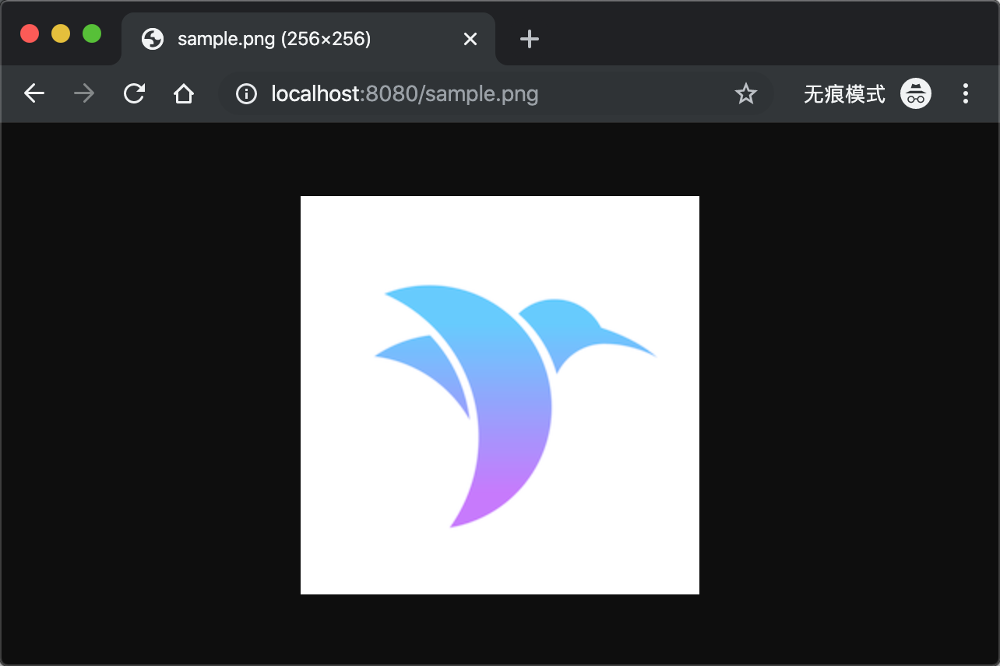

Middleware¶
Middleware 是一个中间件组件，它可以在 请求前 和 请求后 做一些额外的处理。
如何使用¶
以系统中间件 FileMiddleware 为例。FileMiddleware 的作用是在接收到 请求 后，先在 Public/ 目录下查找是否有匹配的资源文件，如果存在的话就直接返回该资源文件。
只需要在 configure.swift 中配置下即可。
// Register middleware app.middleware.use(FileMiddleware(publicDirectory: app.directory.publicDirectory))
比如，我们将一张测试图片（比如：sample.png）存放到 Public 目录中，在本地服务已启动的情况下（假设所占端口为 8080），访问 http://localhost:8080/sample.png 地址可直接显示 Public/ 目录下的 sample.png 图片。
效果如下

Middleware 源码¶
Middleware 其实是一个 protocol ，内部定义了 respond 方法，源码如下：
public protocol Middleware { /// Called with each `Request` that passes through this middleware. /// - parameters: /// - request: The incoming `Request`. /// - next: Next `Responder` in the chain, potentially another middleware or the main router. /// - returns: An asynchronous `Response`. func respond(to request: Request, chainingTo next: Responder) -> EventLoopFuture<Response> }
可以在 respond 方法中做一些额外的处理。
FileMiddleware 源码分析¶
FileMiddleware 源码如下：
public final class FileMiddleware: Middleware { /// The public directory. /// - note: Must end with a slash. private let publicDirectory: String /// Creates a new `FileMiddleware`. public init(publicDirectory: String) { self.publicDirectory = publicDirectory.hasSuffix("/") ? publicDirectory : publicDirectory + "/" } /// See `Middleware`. public func respond(to request: Request, chainingTo next: Responder) -> EventLoopFuture<Response> { // make a copy of the path var path = request.url.path // path must be relative. while path.hasPrefix("/") { path = String(path.dropFirst()) } // protect against relative paths guard !path.contains("../") else { return request.eventLoop.makeFailedFuture(Abort(.forbidden)) } // create absolute file path let filePath = publicDirectory + path // check if file exists and is not a directory var isDir: ObjCBool = false guard FileManager.default.fileExists(atPath: filePath, isDirectory: &isDir), !isDir.boolValue else { return next.respond(to: request) } // stream the file let res = request.fileio.streamFile(at: filePath) return request.eventLoop.makeSucceededFuture(res) } }
查看 FileMiddleware 中的 respond 方法得知，通过 FileManager.default.fileExists 方法可以判断指定资源文件是否存在，如果存在的话，就直接将该资源文件返回给客户端，否则通过 next.respond(to: request) 来执行进一步的操作。
自定义 Middleware¶
我们将自定义一个 Middleware 组件，作用是对 Request 请求处理完后返回的 Response 的 Header 信息中统一添加一个 Key（比如：My-Key）。
创建¶
创建 MyMiddleware.swift 文件，存放于 App/Middleware/ 目录下。
import Vapor public final class MyMiddleware: Middleware { public func respond(to request: Request, chainingTo next: Responder) -> EventLoopFuture<Response> { // Handle request before // ...... // Handle request let resposneFuture = next.respond(to: request) // Handle request after return resposneFuture.flatMap { response in response.headers.add(name: "My-Key", value: "Test123456") return request.eventLoop.makeSucceededFuture(response) } } }
调用 next.respond(to: request) 将会唤起路由相关的回调，并对请求进行处理。然后通过 response.headers.add(name: "My-Key", value: "Test123456") 来给的 Response 的 Header 信息中添加一组 Key-Value 数据（示例中 Key 是 My-Key，Value 是 Test123456）。
使用¶
在 configure.swift 文件中添加如下代码：
app.middleware.use(MyMiddleware())
此时启动服务后，MyMiddleware 中间件将立即生效，访问任意一个接口，返回的 Reponse 中的头信息中都将包含 My-Key 的信息。